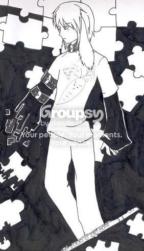
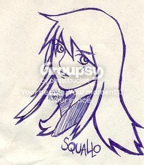

เมิอรี่ คริสมาสสสสส ^w^
http://eco.froztic.in.th/archive/ecofanclub/
กระทู้ [FC]~FanArt Collection~ วาดได้ตามใจฉัน
http://eco.froztic.in.th/archive/ecofanclub/viewtopic.php?f=21&t=1294
หน้า 132 จากทั้งหมด 143
ไม่ได้เข้ามาซะนานเลย... :lol:
ไหนๆก็ไหนๆลงงานซะหน่อยดีก่า
หายไปนานเพราะวาดการ์ตูนอยู่อ่าค่ะ - -
วันนี้เลยเอาคาแร็กเตอร์จากการ์ตูนที่วาดอยู่มาลงให้ติชมกัน
เริ่มจาก
องค์ชายโทรุ แห่งแคว้นไทโยซึกิ

เจ้าหญิงชิโนริโกะ แห่งแคว้นคาเซะอุจิ

แล้วก็นากากิ องครักษ์ ของเจ้าหญิงชิโนริโกะ

ว่างๆไปอ่านได้ที่นี้นะคะ
http://www.thaitist.com/board/index.php?showtopic=833
หายไปนานเพราะวาดการ์ตูนอยู่อ่าค่ะ - -
วันนี้เลยเอาคาแร็กเตอร์จากการ์ตูนที่วาดอยู่มาลงให้ติชมกัน
เริ่มจาก
องค์ชายโทรุ แห่งแคว้นไทโยซึกิ
เจ้าหญิงชิโนริโกะ แห่งแคว้นคาเซะอุจิ
แล้วก็นากากิ องครักษ์ ของเจ้าหญิงชิโนริโกะ
ว่างๆไปอ่านได้ที่นี้นะคะ
http://www.thaitist.com/board/index.php?showtopic=833
อ่า ลองอ่านดูละ หนุกดีคับ หน้าไหม่มาบอกด้วยน้า*-*


ต๊ายยย
ได้ใจมั่กค้าเรปบน><
ได้ใจมั่กค้าเรปบน><
แฮ่~~ แอบมาแปะภาพที่วาดไว้ก่อนคริสต์มาสฮะ
กิงเซย์ที่เพิ่งรู้สึกตัวตอนแสกนว่าลงสีที่หน้าเข้มไป XD
อ๊างงงงส์ เค้ารักกิงเซย์~~
ภาพหย่าย > http://i133.photobucket.com/albums/q74/ ... i-xmas.jpg

เลวิน เงา กับหมึกดำ
ยังไม่เสร็จอ่ะฮะ กำลังหาแบบกระจกสวยๆอยู่
ภาพหย่าย > http://i133.photobucket.com/albums/q74/ ... n-Inkw.jpg
ซูแซ็ตเตอ ฟลุท จิ๊กซอว์ กับโคตรพ่อโคตรแม่หมึก
ภาพหย่าย > http://i133.photobucket.com/albums/q74/ ... Jgsaww.jpg

Needs More!!
ช่วงนี้ไม่ได้กินของหวานเลยอ่ะ.. TwT"
ภาพหย่าย > http://i133.photobucket.com/albums/q74/ ... dsmore.jpg
สควอโล่...
ตอนแรกผมเขียนตัวL ลงไปตัวเดียวนะ แต่ตอนหลังชักไม่แน่ใจว่ามีกี่ตัว ก็เลยใส่ให้อีกตัว XD
วาดลงกระดาษทดตอนสอบมิดเทอมฮะ
(แต่ สงสัยทำไมสควอโล่มันเหมือนยาซูจริง..(ตอนนี้ผมตกหลุมรักสควอโล่ไปแล้ว))
ภาพหย่าย > http://i133.photobucket.com/albums/q74/ ... Squalo.jpg
กระดาษทดอีกแผ่น(อันนี้เลขเสริม อันบนเลขหลัก)
จิ้มนี่ > http://i133.photobucket.com/albums/q74/ ... d-test.jpg
งอกเร่งรีบ
ผมใช้อิมเมจจากฮาล์ว(Howl's Moving Castle) กับท่านมุเก็น(Mugen Shinshi)อ่ะฮะ~
ภาพหย่าย > http://i133.photobucket.com/albums/q74/ ... emtime.jpg
(รู้สึกว่าจะเป็น) ยูจังกับของหวาน
รู้หรอกฮะว่าเบี้ยว TwT""
(เค้าไม่อยากลบที่ถมคาร์บอนไปแล้วอ่าส์ ปวดใจจจจ)
ภาพหย่าย > http://i133.photobucket.com/albums/q74/ ... Sweets.jpg
แฮ่ หมดและ
ต่อด้วยสคส.ที่วาดที่exteen


แฮปปี้นิวเยียร์ฮะ♥
ปล. งานวันวิชาการที่โรงเรียน น่าจะ เป็นวันที่17-18นี้
ยังทำแฟลชที่จะโชว์ไม่เสร็จเลย เฮือกกกกก

กิงเซย์ที่เพิ่งรู้สึกตัวตอนแสกนว่าลงสีที่หน้าเข้มไป XD
อ๊างงงงส์ เค้ารักกิงเซย์~~
ภาพหย่าย > http://i133.photobucket.com/albums/q74/ ... i-xmas.jpg

เลวิน เงา กับหมึกดำ
ยังไม่เสร็จอ่ะฮะ กำลังหาแบบกระจกสวยๆอยู่
ภาพหย่าย > http://i133.photobucket.com/albums/q74/ ... n-Inkw.jpg



ซูแซ็ตเตอ ฟลุท จิ๊กซอว์ กับโคตรพ่อโคตรแม่หมึก
ภาพหย่าย > http://i133.photobucket.com/albums/q74/ ... Jgsaww.jpg

Needs More!!
ช่วงนี้ไม่ได้กินของหวานเลยอ่ะ.. TwT"
ภาพหย่าย > http://i133.photobucket.com/albums/q74/ ... dsmore.jpg



สควอโล่...
ตอนแรกผมเขียนตัวL ลงไปตัวเดียวนะ แต่ตอนหลังชักไม่แน่ใจว่ามีกี่ตัว ก็เลยใส่ให้อีกตัว XD
วาดลงกระดาษทดตอนสอบมิดเทอมฮะ
(แต่ สงสัยทำไมสควอโล่มันเหมือนยาซูจริง..(ตอนนี้ผมตกหลุมรักสควอโล่ไปแล้ว))
ภาพหย่าย > http://i133.photobucket.com/albums/q74/ ... Squalo.jpg

กระดาษทดอีกแผ่น(อันนี้เลขเสริม อันบนเลขหลัก)
จิ้มนี่ > http://i133.photobucket.com/albums/q74/ ... d-test.jpg


งอกเร่งรีบ
ผมใช้อิมเมจจากฮาล์ว(Howl's Moving Castle) กับท่านมุเก็น(Mugen Shinshi)อ่ะฮะ~
ภาพหย่าย > http://i133.photobucket.com/albums/q74/ ... emtime.jpg


(รู้สึกว่าจะเป็น) ยูจังกับของหวาน
รู้หรอกฮะว่าเบี้ยว TwT""
(เค้าไม่อยากลบที่ถมคาร์บอนไปแล้วอ่าส์ ปวดใจจจจ)
ภาพหย่าย > http://i133.photobucket.com/albums/q74/ ... Sweets.jpg

แฮ่ หมดและ
ต่อด้วยสคส.ที่วาดที่exteen
แฮปปี้นิวเยียร์ฮะ♥
ปล. งานวันวิชาการที่โรงเรียน น่าจะ เป็นวันที่17-18นี้
ยังทำแฟลชที่จะโชว์ไม่เสร็จเลย เฮือกกกกก
สวยดีครับ แต่ยังผิดเรื่อง อนาโตมี่หน่อยนึงง่ะ ผมก็ฝึกอยู่
ตอนนี้ปั่น วาดตูน ส่งวิชาภาษาไทย-*- โอยเหนื่อย
/รู้สึกว่าบอร์ดFanArt&Fiction เริ่มจะร้างนิดๆ-3-
ตอนนี้ปั่น วาดตูน ส่งวิชาภาษาไทย-*- โอยเหนื่อย
/รู้สึกว่าบอร์ดFanArt&Fiction เริ่มจะร้างนิดๆ-3-
คุน Sucette ใช้ นิจิหัวตัดหรอครับ -*-ไม่เปลืองตังแย่หรอนั่น ใช้เปงหมึกอินเดียอึ้งกะพู่กันดีก่าไหมอ่า ประหยัดได้เยอะ
~*Saint_Crow*~ เขียน:คุน Sucette ใช้ นิจิหัวตัดหรอครับ -*-ไม่เปลืองตังแย่หรอนั่น ใช้เปงหมึกอินเดียอึ้งกะพู่กันดีก่าไหมอ่า ประหยัดได้เยอะ
555+
สเตปเดวกานเรย
เอิ๊กๆๆๆๆ
~*Saint_Crow*~ เขียน:คุน Sucette ใช้ นิจิหัวตัดหรอครับ -*-ไม่เปลืองตังแย่หรอนั่น ใช้เปงหมึกอินเดียอึ้งกะพู่กันดีก่าไหมอ่า ประหยัดได้เยอะ
อ๋อ พอดีช่วงที่วาดภาพนั้นผมต้องเขียนตัวริบบิ้นอ่ะฮะ เลยมีนิจิ(ของตัวเอง และเก็บตก)ไว้ใช้ถมดำ
แต่ถ้าเป็นงานช่วงนี้(ภาพเลวิน, ซูแซ็ตเตอ) ผมจะใช้อินเดียอิงค์ฮะ :3
Sucette เขียน:~*Saint_Crow*~ เขียน:คุน Sucette ใช้ นิจิหัวตัดหรอครับ -*-ไม่เปลืองตังแย่หรอนั่น ใช้เปงหมึกอินเดียอึ้งกะพู่กันดีก่าไหมอ่า ประหยัดได้เยอะ
อ๋อ พอดีช่วงที่วาดภาพนั้นผมต้องเขียนตัวริบบิ้นอ่ะฮะ เลยมีนิจิ(ของตัวเอง และเก็บตก)ไว้ใช้ถมดำ
แต่ถ้าเป็นงานช่วงนี้(ภาพเลวิน, ซูแซ็ตเตอ) ผมจะใช้อินเดียอิงค์ฮะ :3
เขียนงานหรอครับ ตัวริบบิ้น
คุณ Sucette จัดวางฉากสวยอีกแล้วอ่าค่ะ เราทำไม่เป็น แบบว่าไงอ่ะ เลือกไม่ถูกว่าควรจะเป็นแบบไหน
ถึงจะเท่ หรือ ถึงจะน่ารักอ่ะ แต่ของคุณ Sucette ทำออกมาค่อนข้างลงตัวเลยค่ะ ชอบ^^
//เทอมนี้จะตกมั้ยนิเรา กฏหมาย8ตัวเวลาอีก2เดือนยังไม่ท่องซักมาตราเล้ย!!!!~ T^T
ถึงจะเท่ หรือ ถึงจะน่ารักอ่ะ แต่ของคุณ Sucette ทำออกมาค่อนข้างลงตัวเลยค่ะ ชอบ^^
//เทอมนี้จะตกมั้ยนิเรา กฏหมาย8ตัวเวลาอีก2เดือนยังไม่ท่องซักมาตราเล้ย!!!!~ T^T
อ้อ ใช้จริงอย่างทีคุณ Aofkung ว่า ที่ว่าอยู่ในบอร์ด FanArt&Fiction แล้วกระทู้เริ่มจะร้าง - -
จากทีวินิจฉัยแล้ว (ฟังดูยิ่งใหญ่จัง - - )
คาดว่าน่าจะมาจากสาเหตุที่ว่า ไม่มีแรงกดดัน คือแบบว่าถ้ายังอยู่ในหน้าบอร์ดทั่วไปอยู่
มีการหมุนเวียงของกระทู้อยู่เรื่อยๆ ทำให้กระทู้ของพวกเราตกกันง่ายๆ
จึงถือเป็นแรงกดดันของคนที่แวะเวียนอยู่ในกระทู้นี้บ่อยๆว่า......"เฮ้ยๆๆๆๆๆ ตกอีกแล้ว เอ้าขุดดดดด!!!~"
เพื่อที่จะไม่ให้กระทู้ที่รักได้ล่วงหล่นลงไปอยู่หน้าไหนต่อหน้าไหน - -
แต่พอย้ายมาอยู่ในบอร์ดนี้ พวกเราหลายคนลึกๆคงมีคิดแว็บนึงที่เหมือนกันคือ....
"แหมอยู่บอร์ดนี้ ตกไปก็ไม่เป็นไรหรอก ไม่ได้หายไปไหน ก็มันมีแค่หน้าเดียวเอง ต่อให้มีกระทู้เกิดใหม่มาเยอะๆ ก็คงไม่ล่วงไปจนขนาดหาไม่เจอหรอกน่า~"
ทำนองนั้น - -
เหตุนี้เอง จึงทำให้ผู้เข้ามาช่วยดัน(ในบางเวลา)ส่วนหนึ่งนั้นก็คือ เหล่าคนหน้าใหม่ที่เข้ามาเยี่ยมชมกระทู้นี้
ไม่ทราบความเป็นไปด้วยว่า อ้าวย้ายมาบอร์ดนี้แล้วเหรอ - -
สรุปผลได้ในทำนองนี้ค่ะ ...... - -
จากทีวินิจฉัยแล้ว (ฟังดูยิ่งใหญ่จัง - - )
คาดว่าน่าจะมาจากสาเหตุที่ว่า ไม่มีแรงกดดัน คือแบบว่าถ้ายังอยู่ในหน้าบอร์ดทั่วไปอยู่
มีการหมุนเวียงของกระทู้อยู่เรื่อยๆ ทำให้กระทู้ของพวกเราตกกันง่ายๆ
จึงถือเป็นแรงกดดันของคนที่แวะเวียนอยู่ในกระทู้นี้บ่อยๆว่า......"เฮ้ยๆๆๆๆๆ ตกอีกแล้ว เอ้าขุดดดดด!!!~"
เพื่อที่จะไม่ให้กระทู้ที่รักได้ล่วงหล่นลงไปอยู่หน้าไหนต่อหน้าไหน - -
แต่พอย้ายมาอยู่ในบอร์ดนี้ พวกเราหลายคนลึกๆคงมีคิดแว็บนึงที่เหมือนกันคือ....
"แหมอยู่บอร์ดนี้ ตกไปก็ไม่เป็นไรหรอก ไม่ได้หายไปไหน ก็มันมีแค่หน้าเดียวเอง ต่อให้มีกระทู้เกิดใหม่มาเยอะๆ ก็คงไม่ล่วงไปจนขนาดหาไม่เจอหรอกน่า~"
ทำนองนั้น - -
เหตุนี้เอง จึงทำให้ผู้เข้ามาช่วยดัน(ในบางเวลา)ส่วนหนึ่งนั้นก็คือ เหล่าคนหน้าใหม่ที่เข้ามาเยี่ยมชมกระทู้นี้
ไม่ทราบความเป็นไปด้วยว่า อ้าวย้ายมาบอร์ดนี้แล้วเหรอ - -
สรุปผลได้ในทำนองนี้ค่ะ ...... - -
~*Saint_Crow*~ เขียน:เขียนงานหรอครับ ตัวริบบิ้น
ถูกต้องแล้วฮะ :3
ก่อนหน้านี้เขียนตัวริบบิ้น แล้วก็มาทำลายไทยต่อ
อาทิตย์ที่แล้วเพิ่งสอบวาด(และลงสี)ตัวพระตัวนางไป (แต่ผมทำยักษ์อ่ะนะ)
อาทิตย์หน้าก็จะออกแบบกล่องใส่ผลิตภัณฑ์แล้วฮะ
ความเห็นเรื่องกระทู้ร้าง ตรงกับท่านPhantomทุกประการฮะ XD
ถ้าอยู่ที่กระดานสนทนา เวลาRefreshหน้าใหม่ผมก็ยังรู้ว่ากระทู้มีอะไรเปลี่ยนแปลงไปรึปล่าว
แต่พอย้ายมากระดานนี้แล้ว ผมขี้เกียจRefreshพร้อมกันสองหน้าอ่ะ..